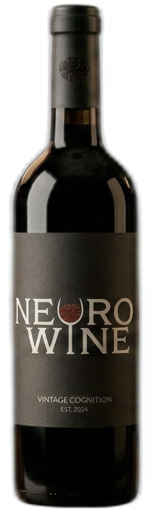
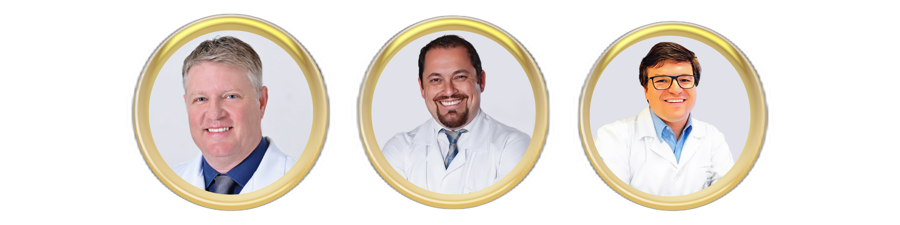

O que é o NeuroWine?

O Neurowine é uma imersão científica médica integrada ao enoturismo e conectada a experiências gastronômicas e culturais locais.
O Evento tem como objetivo reunir neurocirurgiões para compartilhar conhecimento e experiências relacionadas a casos desafiadores em neurocirurgias, assim como estreitar os relacionamentos entre os colegas.
Experiência Única
Para equilibrar nossos momentos com tantos casos complexos durante as aulas, o Neurowine oferece diversas experiências especiais aos seus participantes e acompanhantes, combinando a agenda de troca de conhecimento, com períodos de relaxamento e prazer ao degustar a rica gastronomia local e visitar vinícolas de padrão internacional (vinhos de altitude) na espectacular natureza da serra catarinense.
Além disto, acompanhantes poderão participar de um workshop de gastronomia especialmente desenhado para elas/eles.
Serão 3 dias de profundas discussões e intensas experiências em ambientes e atividades surpreendentes regado a vinhos especiais e calor humano!
Atenção ao Clima
Prepare sua roupa mais quente pois há expectativa de neve neste período na região.
Regulamento das Apresentações
Qual o seu caso cirúrgico mais difícil? Qual foi o seu maior desafio enfrentado até hoje? Todos participantes deverão realizar a apresentação. Traga e apresente! Vamos juntos debater casos complexos e soluções.

Apresentação do caso
Qual foi a dificuldade encontrada? Qual procedimento fez e qual foi a complicação? Não mostrar ainda a sua conduta/solução.
Discussão do problema
O que fazer? Momento aberto para a opinião e troca de ideias entre os presentes.
Solução do Apresentador
Qual foi a solução encontrada? (ou não encontrada) - Apresentação de resultados.
Conclusão Coletiva
Discussão da solução e fechamento do caso com base na experiência do grupo presente.
- Não há limites no número de slides.
- A apresentação completa não poderá ultrapassar 10 minutos.
- Ao chegar no evento, dirija-se à mídia desk para organizar sua apresentação.
- Entre as apresentações haverá degustação de vinhos da região.

Sejam todos bem vindo(a)s ao NeuroWine 2026!
Os idealizadores do encontro convidam os colegas para viver dias incríveis! Vamos Juntos?
Seja um parceiro Neurowine!
Há diversas oportunidades de parcerias para este evento. Entre em contato com a organização para garantir sua participação neste projeto de discussões científicas qualificadas, intimista e inovador!
Entrar em contato